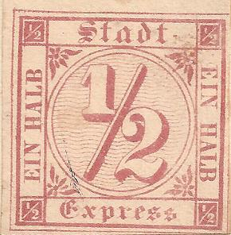
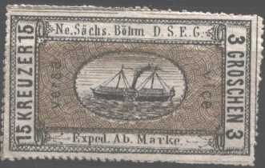
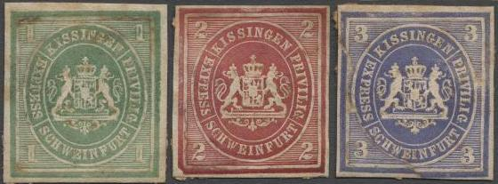

{kind=link}


Elb forgeries, or forgeries inspired by the Elb forgery.
Note: on my website many of the
pictures can not be seen! They are of course present in the
catalogue;
contact me if you want to purchase it.
Ferdinand Elb was a stamp dealer in Dresden (Germany, Amalienstrasse 10 Dresden). See also 'Philatelic Forgers, their lives and works' by Varro E. Tyler. He made good lithographic forgeries of the Saxony 1850 3 pf stamp around 1865 (source: 'Praktisches Handbuch der Freimarken des Konigreichs Sachsen' by Friedrich W.Dieck, 1921, see also http://www.archive.org). They always(?) have a so-called Vollgitterstempel, which is quite rare on genuine stamps (according to the same source).

Elb forgeries, or forgeries inspired by the Elb forgery.
This is supposed to be a local issue for Berlin. It is entirely bogus and made by the forger Ferdinand Elb. There should be three values 1/2 Sgr, 1 Sgr and 2 Sgr. At least four types of forgeries were made of this bogus stamps, probably one of them by the Spiro Brothers. I do not know if the above stamps are the 'original' or one of the 'forgeries'.
Bogus ship company labels; 'Ne. Sachs. Bohm D.S.E.G. Exped. Ab. Marke', probably made by Elb:

These stamps are bogus, three values exist: 5 kr (=1 gr), 10 kr (=2 gr) and 15 kr (=3 gr). There even seem to exist forgeries of these bogus stamps!

This issue is mentioned as 'Speculations' or 'Schwindelmarke' in Ferdinand Meyer's 'Handbuch fur Postmarkensammler' (Nuremberg 1881). Strong doubts about the genuineness of these stamps were already expressed in 'The American Journal of Philately' 1869, page 119. They seem to have been marketed by Ferdinand Elb (The Stamp Collectors Magazine, Dec, 1869, page 179).
Elb also made forgeries of the envelope stamps of Finland. He also seems to have been involved in the Leitmeritz bogus local stamps.